Different kingdoms
Innexins predominate in invertebrates; connexins are the canonical vertebrate gap-junction family in this panel. The comparison starts with who carries which family, not with subfamily purity.
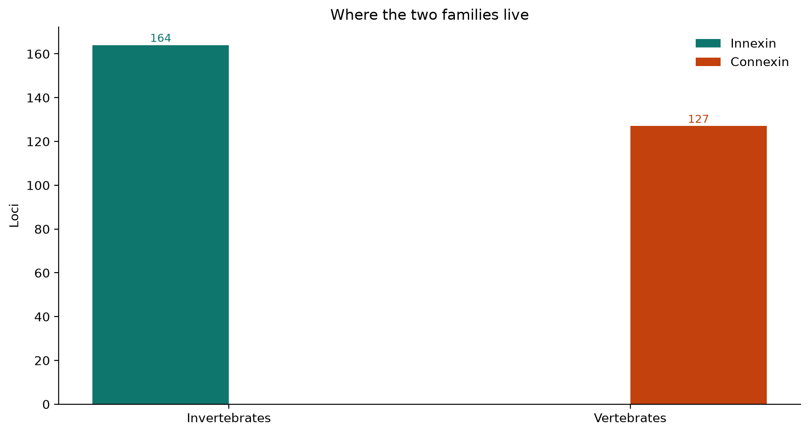
Innexin × Connexin
One sequence space, one length axis, one chemistry panel. Same biological job — sequence evidence asks whether the two families share detectable similarity.
Innexins and connexins occupy the same biological niche (intercellular coupling) but separate clouds in this panel’s sequence space. They live in largely non-overlapping kingdoms, show low cross-family embedding cosine (innexin↔connexin 3-mer cosine -0.40 vs within-family 0.38 / 0.44), different protein lengths (median 367 vs 322 aa), exon architecture, and genomic neighbourhood logic. Cross-family MMseqs finds 0 alignment(s) at e≤1e-3 and ≥80 aa — failure to detect similarity at this threshold is evidence for extreme divergence or separate families, not by itself proof of absence of homology (literature nonetheless treats them as non-homologous channels).
Innexins predominate in invertebrates; connexins are the canonical vertebrate gap-junction family in this panel. The comparison starts with who carries which family, not with subfamily purity.

Every innexin and connexin protein is embedded in the same 3-mer space. They form separate clouds. Cross-family cosine is -0.40 versus 0.38 / 0.44 inside each family.
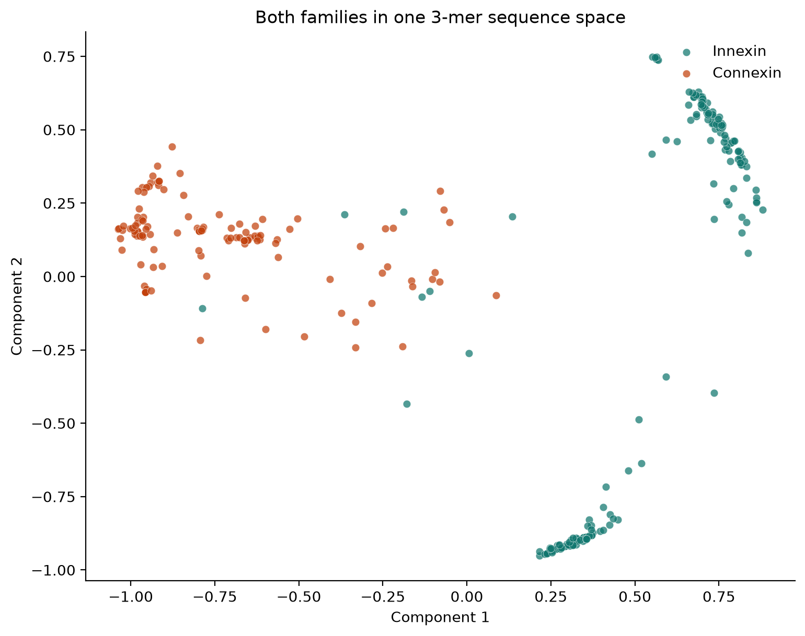
Amino-acid mix alone already splits the two families. They are not two labels on one protein cloud.
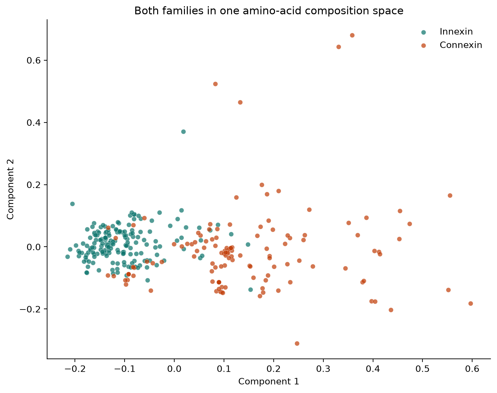
This bar is the actual between-family number: how similar innexins are to connexins, not how similar innexins are to other innexins.
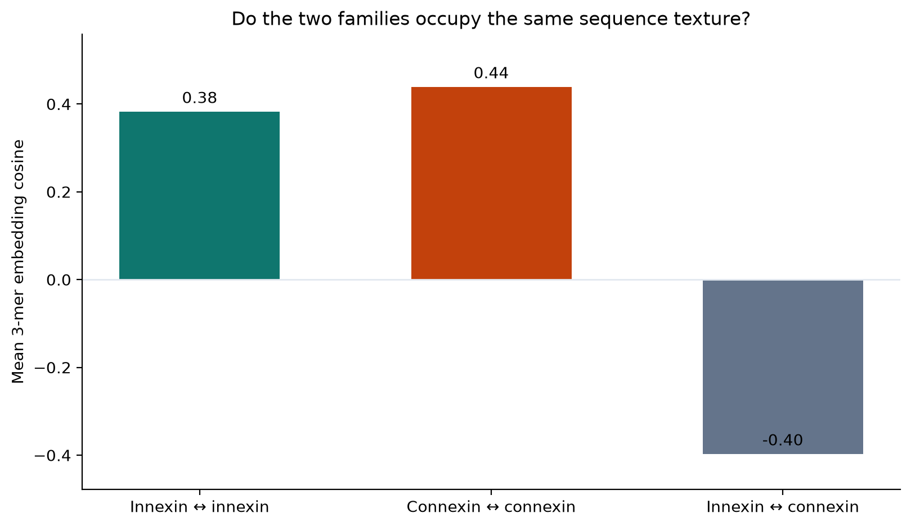
MMseqs innexin query vs connexin target: 0 hit(s) at e≤1e-3 and ≥80 aa among 189 short fragments. Zero long alignments supports extreme divergence or separate families; it is not proof of absence of homology. Same job, different detectable sequence grammar.
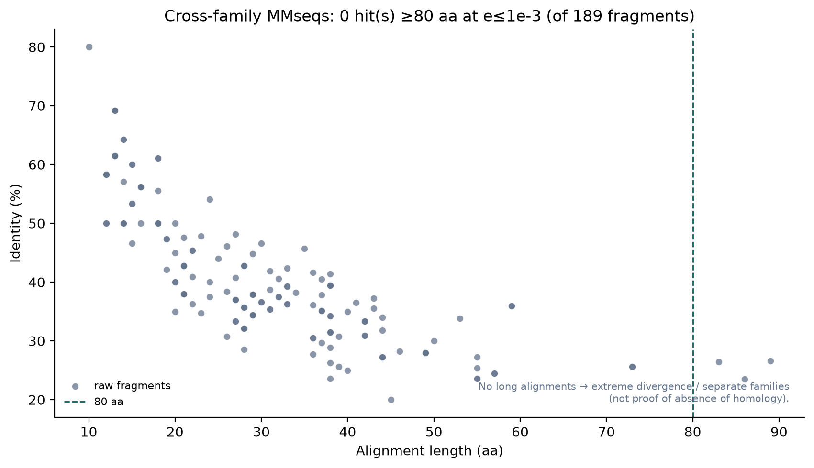
Overlaid monomer length distributions (aa). Innexin median 367 aa, connexin median 322 aa. This is not docked channel length in ångströms — monomer aa lengths are the genomic/sequence character analysed here.
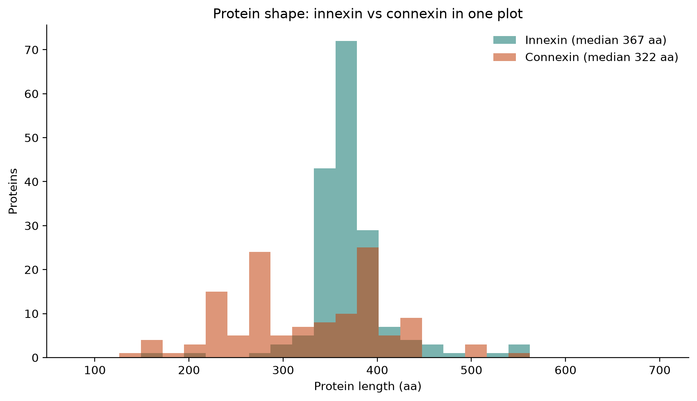
Connexin coding regions usually lack introns (ORF in one exon → compact gene models, panel median ~2 exons including 5′ UTR). Innexins carry coding-region introns (median ~5 exons) and can produce multiple splice variants from one locus. Same axes: exon count and gene span.
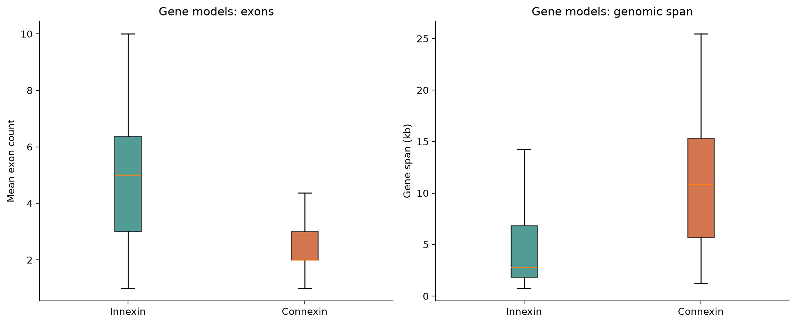
Total cysteine density (whole protein), hydrophobicity (GRAVY) and charged-residue fraction. This is not the conserved extracellular-loop ladder: that signature is fixed at 2 Cys/loop (4 total) for innexins/pannexins vs 3 Cys/loop (6 total) for connexins.
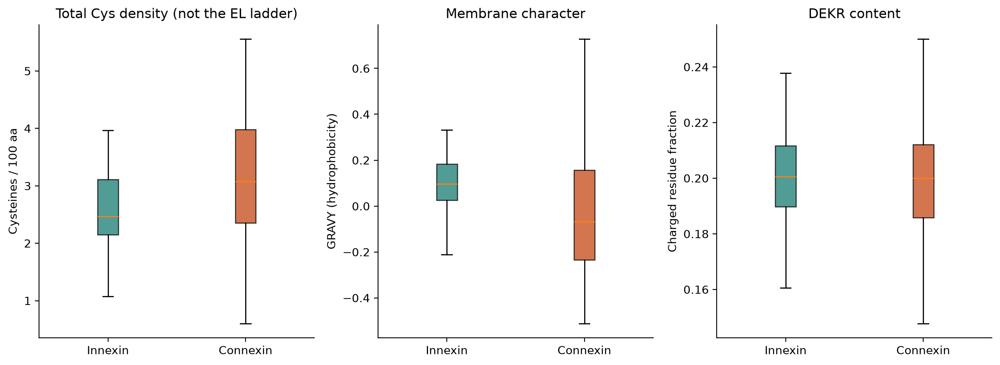
Positive bars: innexins use more of that residue. Negative bars: connexins use more. A direct compositional contrast.
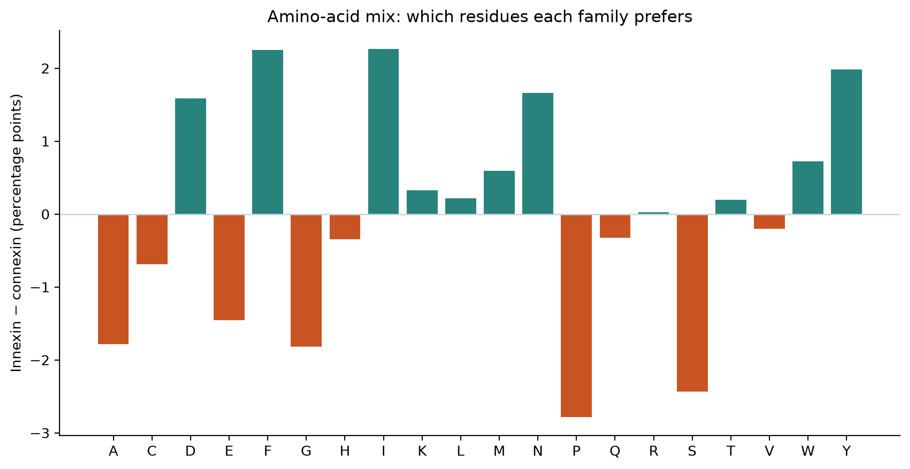
Connexins are large multigene families in vertebrates (~20–22 in jawed vertebrates, up to ~46 in teleosts). A histogram median of 1 in an earlier plot was a panel sampling issue: 23/38 species carry only one connexin locus in this restricted reference/discovery slice (incomplete UniProt sampling + sparse discovery hits). Human (22 loci here) and mouse (20) match expectation; the figure now shows best-covered reference species against the literature band, not a misleading genome-wide median.
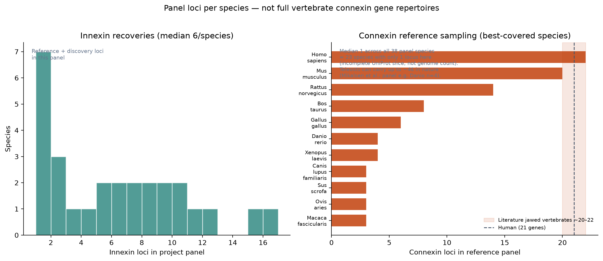
Innexin: tandem clusters that cut across the tree. Connexin: conserved neighbourhoods — GJA4 β-cluster as a tandem-duplication array (unequal crossing-over) versus GJA1 as a WGD-dispersed address. Empty flanks around X. laevis gja1.L are a scaffold/gap issue in the plot, not a gene island. Insect Inx2 ≠ nematode inx-2 (SF4 vs SF3).
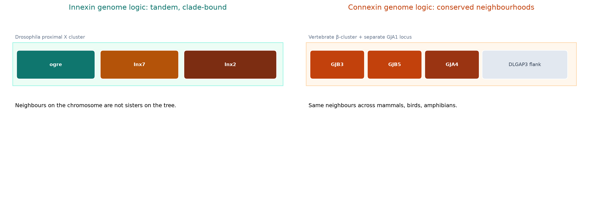
Sequence space, gene models, copy-number sampling, and genomic neighbourhoods — Cys motif counts (4 vs 6) are alignment filters. Annotation caveats are on the gap-junction path · chapter 4.
Same gap-junction job, largely separate kingdom occupancy, separate sequence clouds, different gene models (intron-rich innexins vs compact connexins), and no cross-family MMseqs hits at e≤1e-3 and ≥80 aa — parallel solutions rather than one detectable homologous family in this panel.